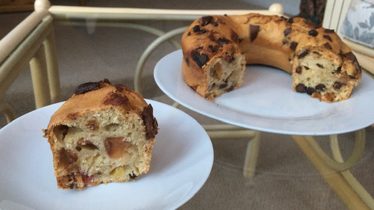

Chocolate Chip Plum Cake
Ingredients:
-
1 Cup of Non-Dairy Milk
-
1 tbsp of Non-Dairy Yogurt/Milk or Apple Sauce
-
1 tsp of Apple Cider Vinegar
-
1/4 Cup of Oil (Unsalted Margarine)
-
1 tsp of Vanilla
-
2 Cups of Flour + 2 tbsp of Almond Flour
-
1/2 Cup of Sugar (1/4 White and 1/4 Brown)
-
2 tsp of Baking Powder
-
1/4 tsp of Baking Soda
-
1/2 Cup of Chocolate Chips
-
4 Plums (Thinly Sliced)

Method:
-
Line a 9 by 5 inch or smaller cake pan with parchment or grease well. Preheat the oven.
-
In a bowl, mix all of the wet ingredients until it is fully combined.
-
In another bowl, whisk the flour, baking powder, baking soda and salt. Add spices of choice if you like. At this point you can also toss in the plums or seasonal berries of choice.
-
Fold the dry mixture into the wet mixture until just about combined.
-
Add the chocolate chips and mix in.
-
Pour the batter into a prepared loaf pan. Sprinkle the remaining chocolate chips on top.
-
Bake for 50 to 55 mins. Cool for 10 mins, then remove from pan. Cool completely before slicing.